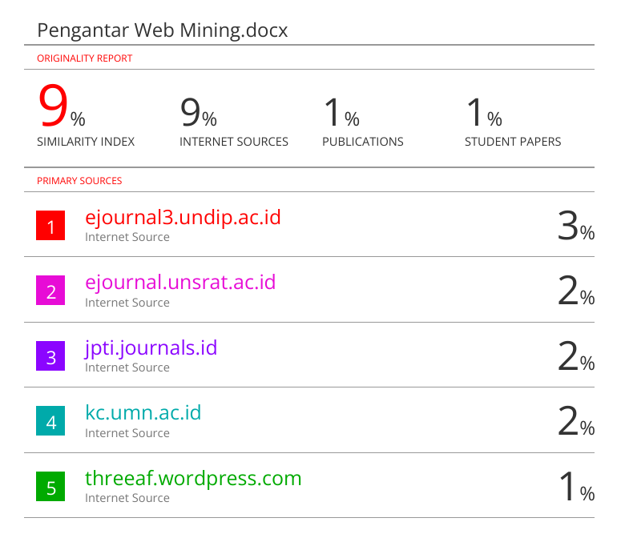

Pengantar Web Mining#
Penambangan web adalah proses mencari dan mengekstrak informasi dari internet dengan menggunakan berbagai teknik data mining. Informasi yang diperoleh dapat membantu perusahaan dalam pengambilan keputusan secara lebih efektif. Berdasarkan tugas utama yang dilakukan selama proses penambangan, web mining dapat dibagi menjadi tiga kategori utama: Web Structure Mining, Web Content Mining, dan Web Usage Mining.
Web Structure Mining : Web structure mining berfokus pada penemuan informasi yang berguna dari hyperlink atau tautan, yang mencerminkan struktur suatu situs web. Contohnya, dari pola tautan kita bisa menemukan halaman web yang penting, yang menjadi dasar teknologi pada mesin pencari. Selain itu, struktur link juga bisa membantu mengidentifikasi komunitas dalam media sosial. Teknik ini tidak dapat dilakukan dengan data mining tradisional, karena data tabel biasa tidak memiliki struktur tautan seperti ini.
Web Content Mining : Web content mining bertujuan untuk mengekstrak informasi atau pengetahuan yang berguna dari isi halaman web. Misalnya, kita dapat secara otomatis mengklasifikasikan dan mengelompokkan halaman web berdasarkan topiknya. Tugas ini serupa dengan data mining konvensional, tetapi memungkinkan kita untuk menambang data spesifik di situs web, seperti deskripsi produk, postingan forum, atau ulasan konsumen, untuk berbagai tujuan. Hal ini tidak tersedia dalam data mining tradisional.
Web Usage Mining : Data penggunaan situs web biasanya dikumpulkan dari Web Server dan Server Aplikasi sebagai sumber utama. Data ini berupa log, yang tercatat setiap kali pengguna berinteraksi dengan halaman web. Berdasarkan sumbernya, log dapat dibagi menjadi tiga jenis: sisi server, sisi klien/pengguna, dan sisi proxy. Selain itu, terdapat sumber data tambahan, seperti cookies, data demografis, dan informasi lain yang relevan.
1. Definisi#
Web mining adalah penerapan metode data mining untuk menemukan informasi secara otomatis dari layanan web (Etzioni, 1996; CACM 39). Tujuannya adalah mengekstrak pola yang bermanfaat dari struktur link, isi halaman web, dan perilaku pengguna (Bing Liu, 2007).
Tantangan Pemrosesan Data Web
Web memiliki ukuran yang sangat besar.
Data tersedia dalam berbagai format, seperti HTML, XML, dan teks.
Tantangan utama meliputi:
Ukuran web sangat besar sehingga sulit diproses seluruhnya.
Kompleksitas struktur web yang tinggi.
Dinamika web yang cepat berubah.
Tidak adanya domain spesifik yang jelas karena web bersifat umum.
Web mencakup beragam konten dan jenis data.
2. Web Crawling#
Web crawling adalah proses mengumpulkan dan mengindeks data dari internet menggunakan program otomatis seperti crawler, spider, atau bot. Hasil crawling disimpan dalam database mesin pencari agar informasi dapat diakses dengan cepat. Proses ini sangat penting karena tanpa crawling, search engine tidak dapat menampilkan hasil pencarian yang relevan. Crawling juga dikenal sebagai indexing, yaitu membaca dan menyimpan seluruh konten web untuk kebutuhan pencarian.
3. Web Data Preprocessing#
Data dari web umumnya mentah, tidak terstruktur, dan banyak mengandung noise. Oleh karena itu, perlu dilakukan preprocessing agar siap dianalisis. Tahapannya meliputi:
Data Cleaning – menghapus data tidak konsisten, memperbaiki nilai hilang, serta mengurangi noise.
Data Integration – menggabungkan data dari berbagai sumber menjadi satu dataset besar.
Data Transformation – mengubah format, struktur, atau nilai data agar sesuai dengan kebutuhan analisis.
4. Pembelajaran Terawasi (Supervised Learning)#
Supervised Learning adalah salah satu metode pembelajaran mesin yang menggunakan data berlabel (memiliki input dan output).
Contoh teknik:
Naive Bayes
Support Vector Machines (SVM)
Jaringan Saraf Tiruan (Deep Neural Networks)
Transformers
5. Pembelajaran Tak Terawasi (Unsupervised Learning)#
Unsupervised Learning digunakan untuk pengelompokan (clustering) atau asosiasi tanpa label data.
Contoh penerapan:
Clustering Dokumen: Mengelompokkan dokumen berdasarkan kesamaan konten. Metode:
K-Means, Hierarchical Clustering, S-BERT. Ukuran kesamaan:
Cosine Similarity, Jaccard, Embedding Similarity.
A. Web Content Mining (Text Mining)#
Proses Ekstraksi Informasi dari Dokumen Web:
Teks (Text Mining): Mengolah konten berbasis teks, seperti artikel, ulasan produk, atau komentar.
Gambar (Image Mining): Mengekstrak informasi dari data visual, misalnya foto produk atau ilustrasi.
Audio (Audio Mining): Memproses suara seperti podcast, rekaman, atau lagu.
Video (Video Mining): Mengambil informasi dari konten multimedia seperti video streaming atau klip.
Data Terstruktur: Memanfaatkan data dalam format tabel, daftar, atau basis data.
B. Contoh Implementasi Text Mining:#
Ekstraksi Informasi: Mengambil entitas atau data penting dari teks.
Pemodelan Topik (Topic Modelling): Mengidentifikasi tema utama dalam kumpulan dokumen.
Ringkasan Dokumen: Membuat versi singkat dari dokumen panjang.
Analisis Sentimen:
Menentukan polaritas opini (positif, netral, negatif).
Contoh : Prediksi opini publik dari media sosial atau review produk.
Klasifikasi Dokumen: Mengelompokkan dokumen ke kategori tertentu.
Clustering Dokumen: Mengelompokkan teks berdasarkan kesamaan.
Ekstraksi Kata Kunci: Mengambil istilah atau frasa yang paling relevan.
6. Web Usage Mining#
Web Usage Mining adalah proses untuk mengidentifikasi pola dari data interaksi pengguna di website.
Sumber Data:
Log server: Catatan aktivitas pengguna yang tersimpan di server.
Cookie pengguna: Data kecil yang menyimpan preferensi pengguna.
Jejak klik (clickstream): Urutan klik yang dilakukan pengguna saat menjelajah.
Tujuan:
Memahami pola perilaku pengguna
personal terhadap pelayanan
Contoh Penggunaan:
Sistem Rekomendasi Produk: Memberikan saran produk berdasarkan riwayat pengguna.
Pencarian Personal: Menyesuaikan hasil pencarian sesuai preferensi.
7. Web Structure Mining (Graph Mining)#
Web Structure Mining adalah analisis pola hubungan antar halaman web melalui struktur hyperlink.
Sumber Data:
Jaringan hyperlink (web graph): Relasi antar halaman melalui tautan.
Data media sosial: Koneksi antar pengguna di platform sosial.
Contoh Aplikasi:
PageRank: Algoritma Google untuk menentukan peringkat halaman.
Analisis Jaringan Sosial: Mengidentifikasi aktor penting dalam jejaring.
Deteksi Komunitas: Menemukan kelompok pengguna yang saling berinteraksi intensif.
8. Deployment System#
Deployment adalah tahap akhir ketika hasil analisis atau model diimplementasikan dalam sistem nyata.
Tahapan Deployment:
Persiapan: Memastikan sistem siap dipublikasikan.
Pengujian: Mengecek sistem di lingkungan yang menyerupai kondisi asli.
Konfigurasi Produksi: Menyesuaikan server, database, dan infrastruktur agar sistem berjalan optimal.
